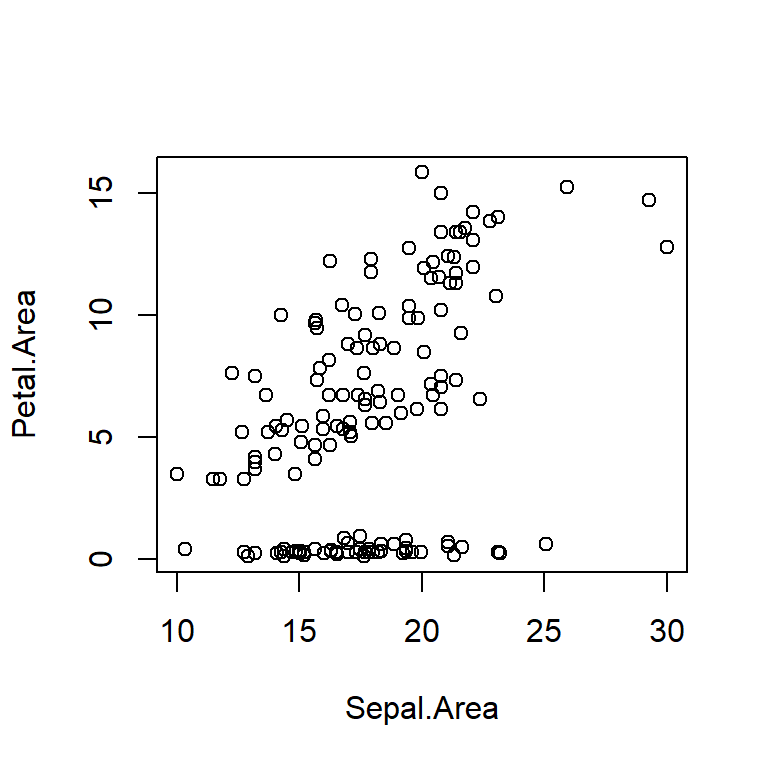
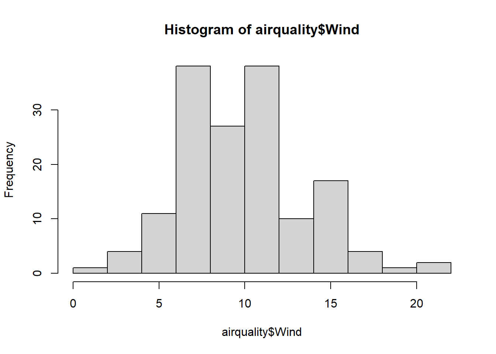
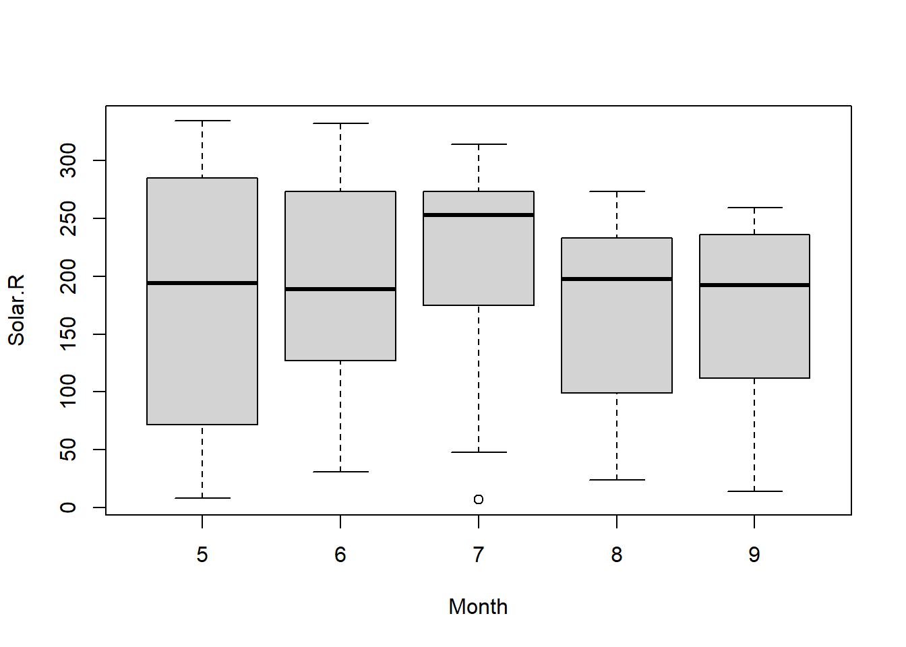
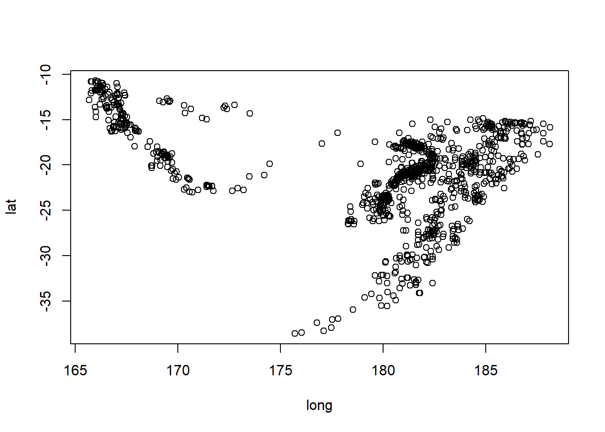

Extra: CA1
Overview
Coverage: L01-L09, P1-P3
This is a document to give you additional practice working in R. It will include working with data (manipulating, summarising, plotting) and analyzing the distributions we’ve covered.
Please do not treat this as a comprehensive study guide for CA1!
Note that there are often many possible paths to the correct solution.
Iris
The iris dataset is available in R upon start-up.
What are the dimensions of the object (rows, columns) and what data type is it?
View code
str(iris)'data.frame': 150 obs. of 5 variables:
$ Sepal.Length: num 5.1 4.9 4.7 4.6 5 5.4 4.6 5 4.4 4.9 ...
$ Sepal.Width : num 3.5 3 3.2 3.1 3.6 3.9 3.4 3.4 2.9 3.1 ...
$ Petal.Length: num 1.4 1.4 1.3 1.5 1.4 1.7 1.4 1.5 1.4 1.5 ...
$ Petal.Width : num 0.2 0.2 0.2 0.2 0.2 0.4 0.3 0.2 0.2 0.1 ...
$ Species : Factor w/ 3 levels "setosa","versicolor",..: 1 1 1 1 1 1 1 1 1 1 ...Create a scatter plot of sepal area on the x-axis and petal area on the y-axis.
First create new columns Sepal.Area and Petal.Area.
View code
# method 1
iris_df <- iris |>
mutate(Sepal.Area=Sepal.Length*Sepal.Width,
Petal.Area=Petal.Length*Petal.Width)
# method 2
iris_df <- iris
iris$Sepal.Area <- iris$Sepal.Length * iris$Sepal.Width
iris$Petal.Area <- iris$Petal.Length * iris$Petal.WidthThen make the scatter plot:
View code
plot(Petal.Area ~ Sepal.Area, data=iris)
For each species, what is the mean and standard deviation of sepal area?
View code
# A tibble: 3 × 3
Species mean_SepalArea sd_SepalArea
<fct> <dbl> <dbl>
1 setosa 17.3 2.93
2 versicolor 16.5 2.87
3 virginica 19.7 3.46View code
# method2
summary(iris$Species) # unique values of Species
mean(iris$Sepal.Area[iris$Species=="setosa"])
mean(iris$Sepal.Area[iris$Species=="versicolor"])
mean(iris$Sepal.Area[iris$Species=="virginica"])
sd(iris$Sepal.Area[iris$Species=="setosa"])
sd(iris$Sepal.Area[iris$Species=="versicolor"])
sd(iris$Sepal.Area[iris$Species=="virginica"])Create a plot with two panels, each with a boxplot with species on the x-axis. In the first panel, plot sepal area on the y-axis. In the second panel, plot petal area on the y-axis.
Extract the even numbered rows from iris, and the columns Species, Sepal.Area, and Petal.Area in that order.
Species Sepal.Area Petal.Area
2 setosa 14.70 0.28
4 setosa 14.26 0.30
6 setosa 21.06 0.68
8 setosa 17.00 0.30
10 setosa 15.19 0.15
12 setosa 16.32 0.32
14 setosa 12.90 0.11
16 setosa 25.08 0.60
18 setosa 17.85 0.42
20 setosa 19.38 0.45
22 setosa 18.87 0.60
24 setosa 16.83 0.85
26 setosa 15.00 0.32
28 setosa 18.20 0.30
30 setosa 15.04 0.32
32 setosa 18.36 0.60
34 setosa 23.10 0.28
36 setosa 16.00 0.24
38 setosa 17.64 0.14
40 setosa 17.34 0.30
42 setosa 10.35 0.39
44 setosa 17.50 0.96
46 setosa 14.40 0.42
48 setosa 14.72 0.28
50 setosa 16.50 0.28
52 versicolor 20.48 6.75
54 versicolor 12.65 5.20
56 versicolor 15.96 5.85
58 versicolor 11.76 3.30
60 versicolor 14.04 5.46
62 versicolor 17.70 6.30
64 versicolor 17.69 6.58
66 versicolor 20.77 6.16
68 versicolor 15.66 4.10
70 versicolor 14.00 4.29
72 versicolor 17.08 5.20
74 versicolor 17.08 5.64
76 versicolor 19.80 6.16
78 versicolor 20.10 8.50
80 versicolor 14.82 3.50
82 versicolor 13.20 3.70
84 versicolor 16.20 8.16
86 versicolor 20.40 7.20
88 versicolor 14.49 5.72
90 versicolor 13.75 5.20
92 versicolor 18.30 6.44
94 versicolor 11.50 3.30
96 versicolor 17.10 5.04
98 versicolor 17.98 5.59
100 versicolor 15.96 5.33
102 virginica 15.66 9.69
104 virginica 18.27 10.08
106 virginica 22.80 13.86
108 virginica 21.17 11.34
110 virginica 25.92 15.25
112 virginica 17.28 10.07
114 virginica 14.25 10.00
116 virginica 20.48 12.19
118 virginica 29.26 14.74
120 virginica 13.20 7.50
122 virginica 15.68 9.80
124 virginica 17.01 8.82
126 virginica 23.04 10.80
128 virginica 18.30 8.82
130 virginica 21.60 9.28
132 virginica 30.02 12.80
134 virginica 17.64 7.65
136 virginica 23.10 14.03
138 virginica 19.84 9.90
140 virginica 21.39 11.34
142 virginica 21.39 11.73
144 virginica 21.76 13.57
146 virginica 20.10 11.96
148 virginica 19.50 10.40
150 virginica 17.70 9.18Air quality
The airquality dataset is available in R upon start-up, and gives daily values of mean ozone, solar radiation, mean wind speed, and max temperature at LaGuardia Airport in New York City (?airquality).
Make a histogram of wind speed.
View code
hist(airquality$Wind)
Assume wind speed is normally distributed in this dataset with \(\mu=9.99 mph\) and \(\sigma = 3.51 mph\).
What proportion of days would you expect to have a wind speed less than 5 mph?
View code
pnorm(5, 9.99, 3.51)[1] 0.07756359You have a kite that can only be flown safely in winds between 14 mph and 20 mph. What proportion of days would be suitable?
How many days would be suitable in a 31-day month?
What proportion of days in the dataset were actually suitable?
View code
mean(airquality$Wind >= 14 & airquality$Wind <= 20)[1] 0.1437908What are the z-scores for 14 and 20 mph?
View code
(14 - 9.99)/3.51[1] 1.14245View code
(20 - 9.99)/3.51[1] 2.851852What are the quantiles for the middle 95%?
What is the quantile for the largest 5%?
View code
qnorm(0.95, 9.99, 3.51)[1] 15.76344Given the population parameters above, what is the z score of the sample mean in the dataset?
Given the population parameters above, what is the probability of observing a sample mean smaller than the one in this dataset?
Create a scatter plot with temperature on the x-axis and log-transformed ozone on the y-axis.
Create a boxplot with the solar radiation on the y-axis and the month on the x-axis.
View code
boxplot(Solar.R ~ Month, data=airquality)
Coral predation
You are studying predation of the Flamingo Tongue Snail on soft corals on South Water Caye in Belize. In a distinct patch of reef, you randomly select a sample of 14 corals and identify that 9 of these have feeding scars.
What distribution would you expect this variable (i.e., the number of corals with feeding scars of those sampled) to follow?
Binomial
What is your sample proportion and its standard error?
Create a bar graph of the binomial distribution corresponding to these parameters, with the x-axis spanning the full range of possible outcomes.
Based on this distribution, if you were to collect another random sample of the same size, what is the probability that all 14 would have feeding scars?
View code
dbinom(14, 14, 9/14)[1] 0.002058745What is the probability you would find fewer with feeding scars than in the first sample?
View code
pbinom(8, 14, 9/14)[1] 0.3811746What is the probability of finding more with feeding scars than in the first sample?
View code
1-pbinom(9, 14, 9/14)[1] 0.400701What is the probability of a sample with 4, 5, or 6 corals with feeding scars?
Earthquakes
The dataset quakes is available in R upon start-up, and gives magnitudes and locations for 1000 seismic events near Fiji since 1964.
Plot the locations of the earthquakes (x-axis: longitude, y-axis: latitude).
View code
plot(lat ~ long, data=quakes)
Create a column called mag_cat with the magnitude truncated to integer (i.e., 4.0-4.99 become 4). Hint: ?trunc
View code
quakes$mag_cat <- trunc(quakes$mag)For each magnitude category (mag_cat), count the number of occurrences in the dataset.
View code
summary(quakes) # ranges 3-6 lat long depth mag
Min. :-38.59 Min. :165.7 Min. : 40.0 Min. :4.00
1st Qu.:-23.47 1st Qu.:179.6 1st Qu.: 99.0 1st Qu.:4.30
Median :-20.30 Median :181.4 Median :247.0 Median :4.60
Mean :-20.64 Mean :179.5 Mean :311.4 Mean :4.62
3rd Qu.:-17.64 3rd Qu.:183.2 3rd Qu.:543.0 3rd Qu.:4.90
Max. :-10.72 Max. :188.1 Max. :680.0 Max. :6.40
stations mag_cat
Min. : 10.00 Min. :4.000
1st Qu.: 18.00 1st Qu.:4.000
Median : 27.00 Median :4.000
Mean : 33.42 Mean :4.203
3rd Qu.: 42.00 3rd Qu.:4.000
Max. :132.00 Max. :6.000 4 5 6
802 193 5 Let’s assume the dataset spans 60 years (1964-2023). What is the mean number of magnitude category 5 earthquakes per year?
View code
lambda_cat5 <- sum(quakes$mag_cat==5)/60
lambda_cat5[1] 3.216667What distribution is most suitable for the number of category 5 earthquakes per year?
Poisson
Using the above value as \(\lambda\), create a bar plot of the probability distribution of the number of category 5 earthquakes per year, ranging from 0 to 10 earthquakes.
What is the probability that next year has no category 5 earthquakes?
View code
dpois(0, lambda_cat5)[1] 0.04008846Of the next 10 years, how many would you expect to have:
No category 5 earthquakes?
View code
dpois(0, lambda_cat5)*10[1] 0.4008846Fewer than 2 earthquakes?
View code
ppois(1, lambda_cat5)*10[1] 1.690397At least 5?
View code
(1-ppois(4, lambda_cat5))*10[1] 2.223618